직원 업무 화면 변경 보고
2026년 10월 28일 · 직원 피드백 반영분. 아래 캡처는 모두 공개 검수용 예시 데이터 화면입니다(일정·식대·지출은 실제 기록이 아님).
1. 팀 일정을 휴무 / 상태 캘린더로 분리팀 일정
캘린더 위에 탭이 생겼습니다. 상태 캘린더는 식사 버튼을 누른 직원을 오늘 칸에 이름 · 식사중 · 시작 시각으로만 표시하고, 종료하면 사라집니다. 다른 직원에게는 시작 시간만 보입니다.
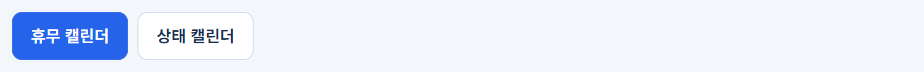
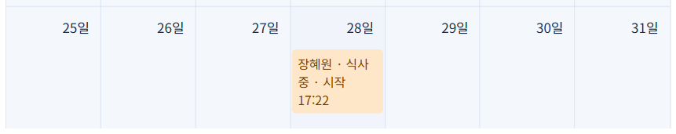
2. 휴무를 시작일~종료일로 등록일정 등록
등록 폼에 종료일이 추가됐습니다. 비워 두면 하루, 채우면 그 기간 전체가 등록되고 캘린더에는 한 막대로 보입니다(최대 62일).
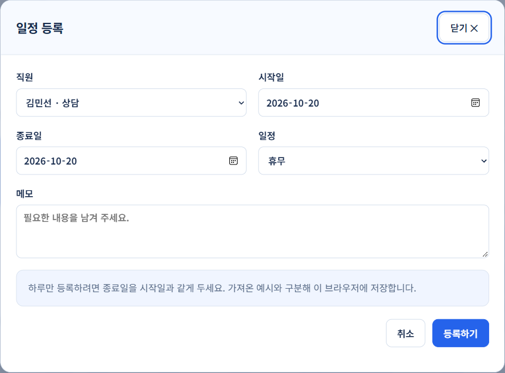
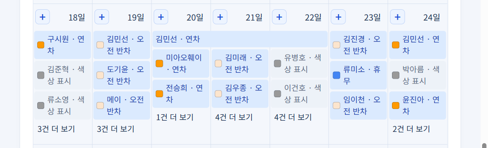
3. 등록한 일정 편집·삭제일정 상세
앱에서 등록한 일정은 상세 창에서 바로 고치거나 지울 수 있습니다. 권한은 등록 권한과 같습니다(본인, 주임 이상은 팀원, 관리자는 전부). 시트에서 가져온 원본 일정은 수정하지 않습니다.
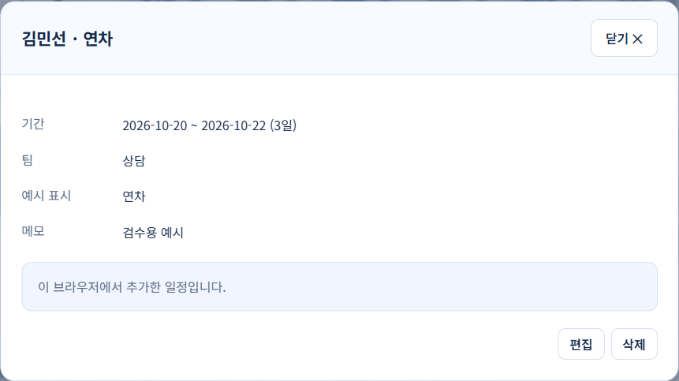
4. 식사 시작 / 중단 / 종료 토글내 하루
버튼 하나가 식사중 ↔ 식사종료로 부드럽게 바뀝니다. 식사 중에는 옆에 식사 중단, 중단 중에는 식사 재개가 붙습니다. 중단한 시간은 식사 시간에서 뺍니다. 버튼 폭은 카드를 꽉 채우지 않고 내용 길이에 맞췄습니다.
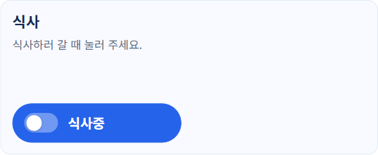
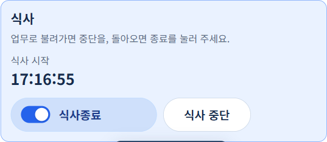
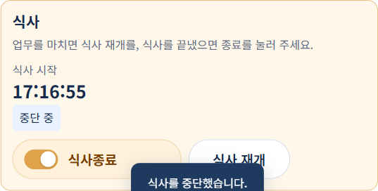
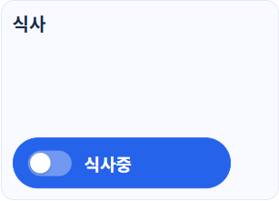
5. 모든 달력에서 끌어서 옮기기내 근무표 · 팀 일정 · 내 식대
일정을 누른 채 다른 날짜 칸으로 끌어 놓으면 옮겨집니다. 앱에서 등록한 일정은 기간째 이동하고, 시트 원본 일정은 화면에서만 옮겨지며 시트는 그대로입니다. 원래 날짜로 다시 끌면 되돌아갑니다. 같은 직원의 칸에만 놓을 수 있고, 공통 일정과 권한 없는 일정은 움직이지 않습니다. 폰에서는 길게 누른 뒤 끌면 됩니다.
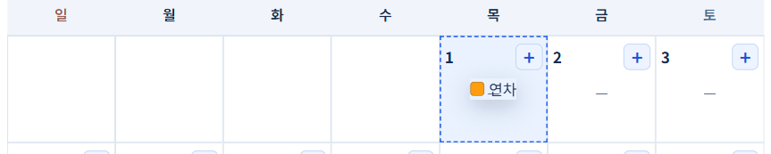
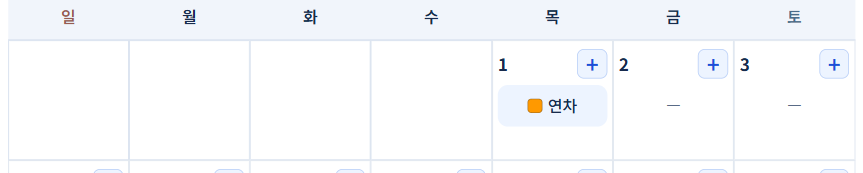
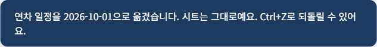
6. 잘못 옮기면 Ctrl+Z새 기능
끌어서 옮긴 직후 Ctrl + Z(맥은 ⌘ + Z)를 누르면 마지막 이동이 되돌아갑니다. 연속으로 누르면 그 전 이동까지(최대 20번). 글자 입력란 안에서는 평소 되돌리기로 동작합니다.
7. 옮겨도 화면이 위로 튀지 않음수정
일정을 옮기거나 고치거나 지운 뒤, 식사 상태를 바꾼 뒤에도 보던 위치 그대로 있습니다. 팀 일정 캘린더에서 특히 위로 튀던 문제를 이번에 잡았습니다. 메뉴를 바꿀 때만 예전처럼 맨 위에서 시작합니다.
8. "N건 더 보기" 마우스 올리면 미리보기팀 일정
더 보기 글자에 마우스를 올리면 그날 전체 목록이 반투명 유리 패널로 바로 보입니다. 누르면 기존 목록 창이 그대로 열립니다. 폰에서는 누르는 방식 그대로입니다.
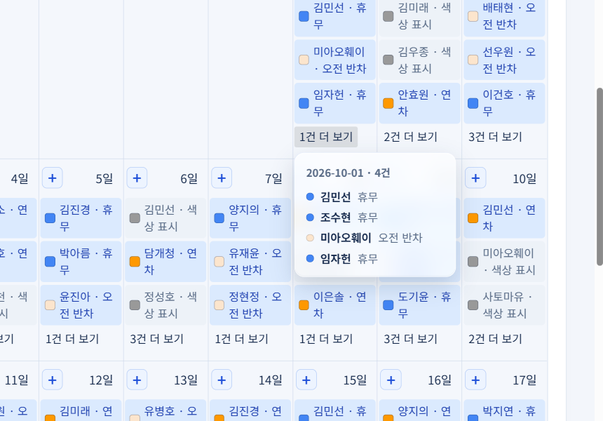
9. 식대 달력 날짜 칸 + 버튼내 식대
날짜 칸 오른쪽 위 +를 누르면 그 날짜로 식대 입력 폼이 열리고 금액 칸에 바로 커서가 갑니다. 폰에서는 선택한 날짜 제목 옆 "+ 식대 입력" 버튼이 같은 일을 합니다.
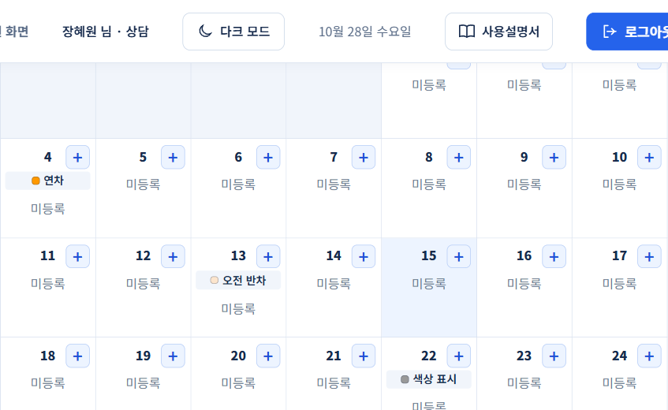
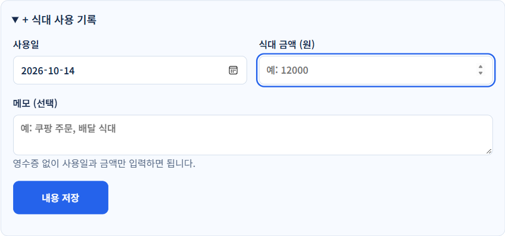
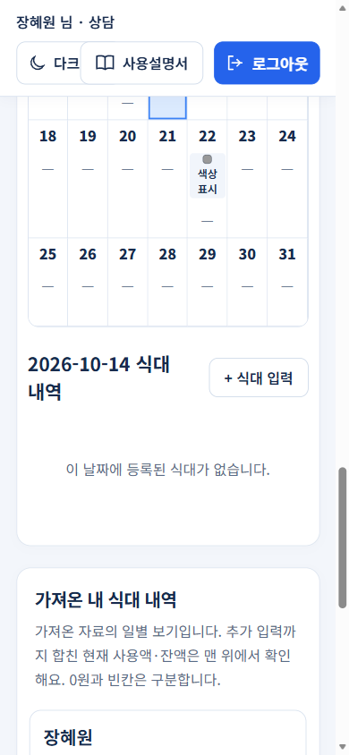
10. 사용설명서 버튼 위치상단바
오른쪽 아래 떠 있던 사용설명서 버튼을 상단바 로그아웃 옆 보조 버튼으로 옮겼습니다.
확인한 것
| 항목 | 결과 |
|---|---|
| 단위 테스트 | 71 / 71 통과 |
| 옮긴 뒤 스크롤 위치 | 근무표 · 팀 일정 · 식대 달력 모두 전후 동일 |
| Ctrl+Z | 세 달력 모두 마지막 이동 복원, 입력란 안에서는 기본 동작 |
| 식사 중단 | 중단 시간 제외한 식사 시간 저장, 상태 캘린더 표시 전환 |
| 폰 390px | 가로 넘침 없음, 칸 +는 숨기고 제목 옆 버튼 표시 |
| 공개판 번들 | 로컬 빌드와 해시 일치 |